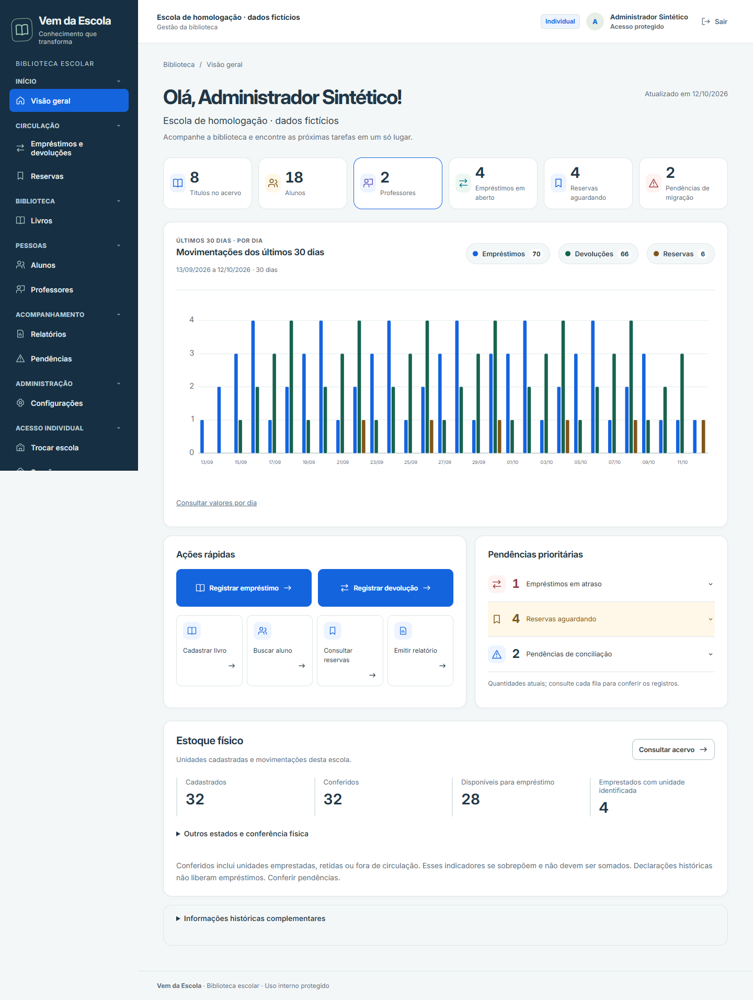

Da experiência real para uma educação mais viva.
O conhecimento que nasce de quem vive a escola de verdade.

Fabby Assis
Educadora e fundadora do Vem da Escola
*Indicador sujeito à confirmação factual antes da publicação.
Uma iniciativa que nasce dentro da escola
O Vem da Escola nasce da experiência da Fabby Assis, educadora com décadas de vivência na escola. Transformamos conhecimento em ferramentas que apoiam professores, gestores e instituições a tornarem a rotina da escola num cotidiano facilitado, organizado e prático.
Não somos uma empresa de tecnologia distante da realidade. Nascemos dentro da sala de aula, da convivência diária com os alunos, dos conselhos de classe, das bibliotecas cheias de histórias e dos desafios cotidianos da gestão escolar.
Da experiência do quadro verde à inovação digital.
A tecnologia não é a origem do Vem da Escola. Ela é a forma de levar a experiência de quem vive a escola para mais salas de aula.
Da experiência
do quadro verde…

O que orienta cada solução desenvolvida
Vivência prática
Compreensão profunda das reais necessidades dos educadores, construída ao longo de décadas de trabalho pedagógico.
Soluções práticas
Tecnologia não deve criar barreiras. Nossas ferramentas são intuitivas, diretas e resolvem a dor real da rotina escolar.
Diálogo e parceria
Aproximação constante entre professores, equipes diretivas, alunos e famílias para construir uma escola acolhedora.
A escola não se faz sozinha
O Vem da Escola também considera a participação dos responsáveis e da comunidade escolar. Mais diálogo entre família, escola e comunidade faz parte da proposta desde o início.
- Famílias e responsáveis
- Professores e equipes
- Gestão da escola
- Comunidade escolar
Quando o conhecimento circula, a educação se fortalece.
Conheça a primeira ferramenta do Vem da Escola
A Biblioteca Escolar é uma ferramenta gratuita para organizar e facilitar a gestão da biblioteca da escola.